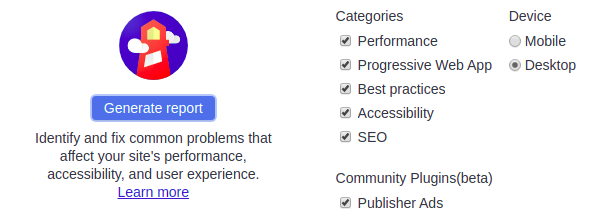
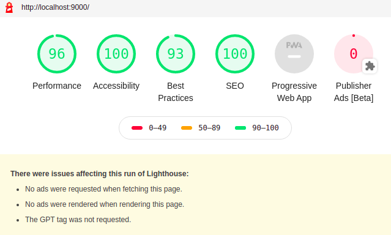

Руководство по Gatsby. Тестирование и подготовка сайта к публикации
Это последняя статья из серии “Руководство по Gatsby”
В предыдущих частях изучалось следующее:
- создание сайтов Gatsby
- создание страниц и компонентов
- компоненты стиля
- добавление плагинов на сайт
- данные source и transform
- использование GraphQL для запроса данных
- программное создание страниц из данных
В этом заключительном разделе показываются общие шаги по подготовке сайта к работе, инструмент диагностики Lighthouse и плагины, которые часто используются на Gatsby-сайтах.
Как выполнить тест с помощью Lighthouse
Lighthouse - автоматизированный инструмент с открытым исходным кодом для улучшения качества веб-страниц. Lighthouse проверяет на веб-страницах производительность, доступность, PWA и др. Lighthouse входит в инструменты разработчика Chrome и позволяет проводить тесты и обнаруживать ошибки. Скорость и доступность сайта увеличатся если устранить эти ошибки и внедрить улучшения, которые предлагает Lighthouse.
Сначала, создайте рабочую сборку Gatsby сайта. Сервер Gatsby оптимизирован для ускорения разработки, но сайт, который создает сервер, хотя и похож на рабочую версию, не оптимизирован как надо.
Создание рабочей сборки
- Остановите сервер разработки если он еще работает и выполните следующую команду:
gatsby build
Эта команда делает рабочую сборку и выводит статические файлы в каталог public.
- Чтобы просмотреть рабочий сайт локально, выполните:
gatsby serve
После ввода этой команды, перейдите по адресу http://localhost:9000.
Выполнение теста в Lighthouse
-
Откройте сайт с помощью браузера Chrome в режиме Инкогнито, чтобы никакие расширения не мешали тесту. Затем, откройте в Хроме инструменты разработчика DevTools.
-
Нажмите на вкладку “Audits”, где появится экран, который выглядит следующим образом:

- Чтобы выполнить тест нажмите кнопку “Generate report” (по умолчанию выбраны все доступные типы теста). После завершения теста появятся результаты, которые выглядят следующим образом:

Из тестов видно, что производительность Gatsby превосходная из коробки, но не хватает некоторых вещей для PWA, Accessibility, Best Practices и SEO, которые улучшат результаты и сделают сайт намного дружелюбнее для посетителей и поисковиков.
Оценка в категории “Progressive Web App” довольно скромная, поэтому, попробуем разобраться с этим.
Progressive Web App или PWA - это веб-сайты, которые похожи на приложения благодаря использованию функционала в современных браузерах. В обзоре Google освещается, что определяет работу PWA.
Ниже приводятся три базовых требований для PWA:
Включение манифеста веб-приложения Использование Service Worker Добавление метаданных страницы
Добавление файла манифеста
Цитата от Google:
Манифест веб-приложения - JSON-файл, который сообщает браузеру о веб-приложении и о поведении этого приложения при “установке” на пользовательском мобильном устройстве или компьютере.
Плагин манифеста настраивает Gatsby для создания файла manifest.webmanifest для каждой сборки сайта.
Использование gatsby-plugin-manifest
- Установите плагин:
npm install --save gatsby-plugin-manifest
-
Добавьте значок приложения в
src/images/icon.png. Если у вас нет значка, то для этого урока воспользуйтесь этим. Значок необходим для построения изображений манифеста. Для получения дополнительной информации обратитесь к документации поgatsby-plugin-manifest -
Добавьте плагин в массив
pluginsфайлаgatsby-config.js.
{kind=link}
{
plugins: [
{
resolve: `gatsby-plugin-manifest`,
options: {
name: `GatsbyJS`,
short_name: `GatsbyJS`,
start_url: `/`,
background_color: `#6b37bf`,
theme_color: `#6b37bf`,
// Enables "Add to Homescreen" prompt and disables browser UI (including back button)
// see https://developers.google.com/web/fundamentals/web-app-manifest/#display
display: `standalone`,
icon: `src/images/icon.png`, // This path is relative to the root of the site.
},
},
]
}
Это все, что вам необходимо, чтобы начать работу с добавлением веб-манифеста на Gatsby сайт. Дополнительно о плагине читайте справку.
Добавление офлайн поддержки
Использование Service Worker является еще одним требованием к веб-сайту, чтобы квалифицироваться как PWA. Service Worker работает в фоновом режиме и, в зависимости от подключения к сети, решает, обслуживать сетевое либо кэшированное содержимое, что обеспечивает бесперебойную управляемую автономную работу.
gatsby-plugin-offline делает сайт автономным и более устойчивым к плохим сетевым условиям, создавая Service Worker для сайта.
Использование gatsby-plugin-offline
- Установите плагин:
npm install --save gatsby-plugin-offline
- Добавьте плагин в массив
pluginsфайлаgatsby-config.js.
{
plugins: [
{
resolve: `gatsby-plugin-manifest`,
options: {
name: `GatsbyJS`,
short_name: `GatsbyJS`,
start_url: `/`,
background_color: `#6b37bf`,
theme_color: `#6b37bf`,
// Enables "Add to Homescreen" prompt and disables browser UI (including back button)
// see https://developers.google.com/web/fundamentals/web-app-manifest/#display
display: `standalone`,
icon: `src/images/icon.png`, // This path is relative to the root of the site.
},
},
// highlight-next-line
`gatsby-plugin-offline`,
]
}
Это все, что нужно, для работы с Service Worker в Gatsby.
Чтобы офлайн плагин кэшировал созданный manifest.webmanifest нужно, чтобы офлайн плагин указывался после плагина манифеста, .
Добавление метаданных страницы
Метаданные, такие как заголовок или описание, помогают поисковикам Google, Yandex и др. понять контент и решить, когда этот контент отображать в результатах поиска.
React Helmet - пакет, который содержит интерфейс React компонента, чтобы управлять заголовком документа.
Gatsby поддерживает плагин react helmet для отображения данных сервера, добавленных с помощью React Helmet. С помощью плагина атрибуты, добавленные в React Helmet, добавляются к статическим HTML-страницам, которые создает Gatsby.
Использование React Helmet и gatsby-plugin-react-helmet
- Установите оба пакета:
npm install --save gatsby-plugin-react-helmet react-helmet
- Добавьте плагин в массив
pluginsфайлаgatsby-config.js
{
plugins: [
{
resolve: `gatsby-plugin-manifest`,
options: {
name: `GatsbyJS`,
short_name: `GatsbyJS`,
start_url: `/`,
background_color: `#6b37bf`,
theme_color: `#6b37bf`,
// Enables "Add to Homescreen" prompt and disables browser UI (including back button)
// see https://developers.google.com/web/fundamentals/web-app-manifest/#display
display: `standalone`,
icon: `src/images/icon.png`, // This path is relative to the root of the site.
},
},
`gatsby-plugin-offline`,
// highlight-next-line
`gatsby-plugin-react-helmet`,
]
}
- Используйте
React Helmetна странице:
import React from 'react';
import { Helmet } from 'react-helmet';
class Application extends React.Component {
render() {
return (
<div className="application">
{/* highlight-start */}
<Helmet>
<meta charSet="utf-8" />
<title>My Title</title>
<link rel="canonical" href="http://mysite.com/example" />
</Helmet>
...
{/* highlight-end */}
</div>
);
}
}
Приведенный выше пример взят из React Helmet docs.
Дальнейшие действия
Официальная документация
- Официальная документация: просмотрите официальную документацию
- Быстрый старт,
- Подробные руководства,
- ссылки на API и другое.
Официальные Плагины
- Официальные Плагины: Полный список всех официальных плагинов, поддерживаемых Gatsby.
Официальные Стартеры
- Gatsby Стартер по умолчанию: Начните проект с этого стандартного шаблона. Этот скелетный стартер поставляется с конфигурационными файлами Gatsby, которые вам могут понадобиться. рабочий пример
- Gatsby Стартер блога: Gatsby стартер для создания классного и быстрого блога. рабочий пример
- Gatsby Стартер "Hello-World": Gatsby стартер с голыми предметами первой необходимости, необходимыми для сайта Gatsby. рабочий пример
Поделитесь в Твитере тем, что вы создали и @упомяните нас!
Внесите вклад! Прогуляйтесь по открытым вопросам репозитория Gatsby и станьте вкладчиком.
Узнайте, “как внести вклад” в документы для еще большего количества идей.
Для написания этой статьи использованы следующие материалы:
- https://www.gatsbyjs.org/tutorial/part-eight/